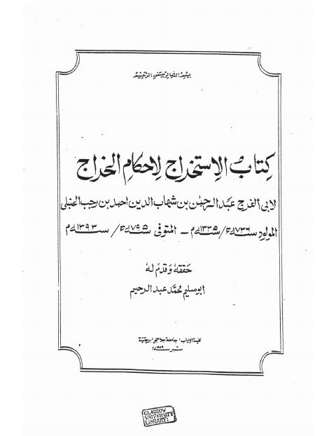

Downloads need an internet connection.
تحقيق كتاب الاستخراج لأحكام الخراج
Authors: ابن رجب الحنبلي
Editors: محمد عبد الرحيم أبو سليم
Publishers: جامعة جلاسكو
**▫️ العنوان: تحقيق كتاب الاستخراج لأحكام الخراج** ▪️ المؤلف: #عبد_الرحمن_بن_أحمد_بن_رجب_الحنبلي ▫️ المحقق: #محمد_عبد_الرحيم_أبو_سليم ▪️ الناشر: #جامعة_جلاسكو ▫️ تاريخ النشر: 1989م ▪️ بلد النشر: جالاسكو، #اسكوتلندا ▫️ الطبعة: 1 ▪️ عدد الأجزاء: 1 ▫️ الصفحات: 384 ▪️ نوع الوعاء: #كتاب ▫️ التصنيف الرئيسي: #الفقه_وأصوله ▪️ التصنيف الفرعي: #الزكاة ۪